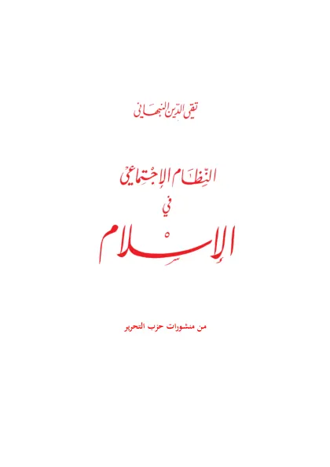

النظام الاجتماعي في الإسلام
Sistem Pergaulan dalam Islam
Baca Sistem Pergaulan dalam Islam (النظام الاجتماعي في الإسلام) karya Taqiyuddin an-Nabhani secara gratis di Maktabah Ilmu: teks Arab, Indonesia, Inggris. Tanpa daftar, tanpa iklan.
Buka kitab iniLihat lemari ilmuDaftar isi
- Ayat-ayat Pembuka
- Mukadimah
- Pria dan Wanita
- Pengaruh Pandangan terhadap Hubungan Pria dan Wanita
- Pengaturan Hubungan Pria dan Wanita
- Kehidupan Khusus
- Kewajiban Memisahkan Pria dan Wanita dalam Kehidupan Islam
- Melihat Wanita
- Wanita Muslimah Tidak Wajib Menutup Wajahnya
- Kedudukan Wanita dan Pria di Hadapan Syariah
- Aktivitas Kaum Wanita
- Jamaah Islam
- Pernikahan
- Wanita-wanita yang Haram Dinikahi
- Poligami
- Pernikahan Nabi SAW
- Kehidupan Suami Isteri
- 'Azl
- Talak
- Nasab
- Li’an
- Perwalian Ayah
- Pengasuhan Anak
- Silaturahim